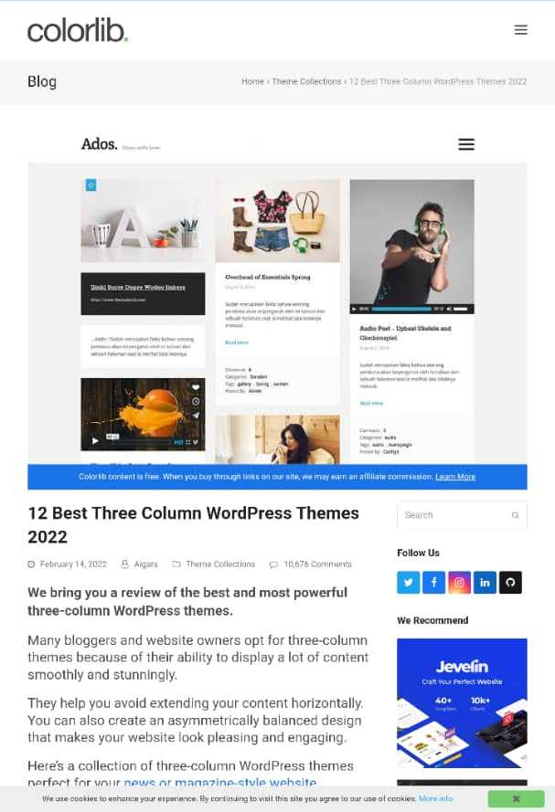

Visual Hierarchy

Why I think the website I chose illustrates the principle is, it includes the principles of design because principles of design include balance, emphasis, white space, proportion, hierarchy, repetition, parttern alignment, color, and variety. These principles of design work together to create something that is pleasing and optimise for user experience. Again, it include the general rules for the design of web-base media that layout and interact with the design. For instance; it bring out the entire experience from the moment users enter the site. It display and deliver the features and the content openly.
Hick's Law
Why I think the website I chose illustrates the principle is, it includes the principles of design because principles of design include balance, emphasis, white space, proportion, hierarchy, repetition, parttern alignment, color, and variety. These principles of design work together to create something that is pleasing and optimise for user experience. Again, it include the general rules for the design of web-base media that layout and interact with the design. For instance; it bring out the entire experience from the moment users enter the site. It display and deliver the features and the content openly.
Rule of Thirds
Why I think the website I chose illustrates the principle is, it includes the principles of design because principles of design include balance, emphasis, white space, proportion, hierarchy, repetition, parttern alignment, color, and variety. These principles of design work together to create something that is pleasing and optimise for user experience. Again, it include the general rules for the design of web-base media that layout and interact with the design. For instance; it bring out the entire experience from the moment users enter the site. It display and deliver the features and the content openly.